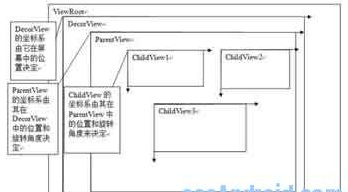

Android 详解动画（二）
Android动画框架原理
现有的Android动画框架是建立在View的级别上的，在View类中有一个接口startAnimation来使动画开始，startAnimation函数会将一个Animation类别的参数传给View，这个Animation是用来指定我们使用的是哪种动画，现有的动画有平移，缩放，旋转以及alpha变换等。如果需要更复杂的效果，我们还可以将这些动画组合起来，这些在下面会讨论到。
要了解Android动画是如何画出来的，我们首先要了解Android的View是如何组织在一起，以及他们是如何画自己的内容的。每一个窗口就是一棵View树，下面以我们写的android_tabwidget_tutorial.doc中的tab控件的窗口为例，通过android工具hierarchyviewer得到的窗口ViewTree。
其实这个图不是完整的，没有把RootView和DecorView画出来，RootView只有一个孩子就是DecorView，这里整个ViewTree都是DecorView的子View，它们是从android1.5/frameworks/base/core/res/res/layout/screen_title.xml这个layout文件infalte出来的，感兴趣的读者可以参看frameworks\policies\base\phone\com\android\internal\policy\Imp\PhoneWindow.java中generateLayout函数部分的代码。我们可以修改布局文件和代码来做一些比较cool的事情，如象Windows的缩小/关闭按钮等。标题窗口以下部分的FrameLayou就是为了让程序员通过setContentView来设置用户需要的窗口内容。因为整个View的布局就是一棵树，所以绘制的时候也是按照树形结构遍历来让每个View进行绘制。ViewRoot.java中的draw函数准备好Canvas后会调用mView.draw(canvas)，其中mView就是调用ViewRoot.setView时设置的DecorView。然后看一下View.java中的draw函数：
递归的绘制整个窗口需要按顺序执行以下几个步骤：
1.绘制背景；
2.如果需要，保存画布（canvas）的层为淡入或淡出做准备；
3.绘制View本身的内容，通过调用View.onDraw(canvas)函数实现，通过这个我们应该能看出来onDraw函数重载的重要性，onDraw函数中绘制线条/圆/文字等功能会调用Canvas中对应的功能。下面我们会drawLine函数为例进行说明；
4.绘制自己的孩子（通常也是一个view系统），通过dispatchDraw(canvas)实现，参看ViewGroup.Java中的代码可知，dispatchDraw->drawChild->child.draw(canvas)这样的调用过程被用来保证每个子View的draw函数都被调用，通过这种递归调用从而让整个View树中的所有View的内容都得到绘制。在调用每个子View的draw函数之前，需要绘制的View的绘制位置是在Canvas通过translate函数调用来进行切换的，窗口中的所有View是共用一个Canvas对象。
5.如果需要，绘制淡入淡出相关的内容并恢复保存的画布所在的层（layer）
6.绘制修饰的内容（例如滚动条），这个可知要实现滚动条效果并不需要ScrollView，可以在View中完成的，不过有一些小技巧，具体实现可以参看我们的TextViewExample示例代码
当一个ChildView要重画时，它会调用其成员函数invalidate()函数将通知其ParentView这个ChildView要重画，这个过程一直向上遍历到ViewRoot，当ViewRoot收到这个通知后就会调用上面提到的ViewRoot中的draw函数从而完成绘制。View::onDraw()有一个画布参数Canvas,画布顾名思义就是画东西的地方，Android会为每一个View设置好画布，View就可以调用Canvas的方法，比如：drawText,drawBitmap,drawPath等等去画内容。每一个ChildView的画布是由其ParentView设置的，ParentView根据ChildView在其内部的布局来调整Canvas，其中画布的属性之一就是定义和ChildView相关的坐标系，默认是横轴为X轴，从左至右，值逐渐增大，竖轴为Y轴，从上至下，值逐渐增大,见下图:

Android动画就是通过ParentView来不断调整ChildView的画布坐标系来实现的，下面以平移动画来做示例，假设在动画开始时ChildView在ParentView中的初始位置在(100,200)处，这时ParentView会根据这个坐标来设置ChildView的画布，在ParentView的dispatchDraw中它发现ChildView有一个平移动画，而且当前的平移位置是(100,200)，于是它通过调用画布的函数traslate(100,200)来告诉ChildView在这个位置开始画，这就是动画的第一帧。如果ParentView发现ChildView有动画，就会不断的调用invalidate()这个函数，这样就会导致自己会不断的重画，就会不断的调用dispatchDraw这个函数，这样就产生了动画的后续帧，当再次进入dispatchDraw时，ParentView根据平移动画产生出第二帧的平移位置(500,200)，然后继续执行上述操作，然后产生第三帧，第四帧，直到动画播完。具体算法描述如清单2：